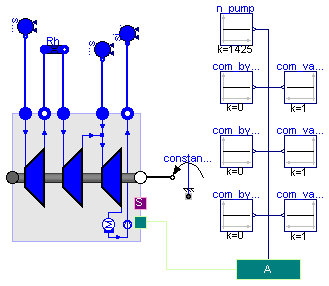

| Name | Description |
|---|---|
| computation_states | |
| TestSettingTurbineHP | |
| TestSettingTurbineIP | |
| TestSettingTurbineLP | |
| TestValveTurbineHP | |
| TestValveTurbineIP | |
| TestValveTurbineLP | |
| TestTurbineHPefficiency | |
| TestST3LRh_base | |
| TestST3LRh_valve | |
| TestST3LRh_bypass | |
| TestCondenserControl | |
| TestSTG_cc | Test of STG with condenser control |
| Type | Name | Default | Description |
|---|---|---|---|
| SpecificEnthalpy | h | 2.39102e6 | value of specific enthalpy [J/kg] |
| Pressure | p | 2e5 | value of pressure [Pa] |
| Temperature | T | 288 | value of temperature [K] |
model computation_states package FluidMedium = ThermoPower.Water.StandardWater; parameter SI.SpecificEnthalpy h=2.39102e6 "value of specific enthalpy"; parameter SI.Pressure p=2e5 "value of pressure"; parameter SI.Temperature T=288 "value of temperature"; SI.Temperature Tf "Temperature (p,h)"; SI.SpecificEnthalpy hf "Specific enthalpy (p,T)"; SI.Temperature Ts "Saturation temperature (p)"; SI.SpecificEnthalpy hv "Dew specific enthalpy (p)"; SI.SpecificEnthalpy hl "Bubble specific enthalpy (p)"; SI.Density rhov "Dew density (p)"; SI.Density rhol "Bubble density (p)"; FluidMedium.SaturationProperties sat "Saturation properties"; equation sat.psat = p; sat.Tsat = FluidMedium.saturationTemperature(p); Ts = sat.Tsat; hl=FluidMedium.bubbleEnthalpy(sat); hv=FluidMedium.dewEnthalpy(sat); Tf=FluidMedium.temperature_ph(p,h); hf=FluidMedium.specificEnthalpy_pT(p,T); rhov=FluidMedium.density_ph(p,h); rhol=FluidMedium.bubbleDensity(sat); end computation_states;
model TestSettingTurbineHP
Water.SteamTurbineStodola steamTurbineStodola(
pstart_in=1.28e7,
pstart_out=2.98e6,
wstart=67.6,
hstartin=3.47e6,
hstartout=3.1076e6,
wnom=67.6,
eta_iso_nom=0.833,
Kt=0.0032078);
Water.SinkP sinkP(p0=29.8e5, h=3.1076e6);
Modelica.Mechanics.Rotational.ConstantSpeed constantSpeed(w_fixed=
314.16/2);
Water.SourceP sourceP(h=3.47e6, p0=1.28e7);
equation
connect(sinkP.flange, steamTurbineStodola.outlet);
connect(constantSpeed.flange, steamTurbineStodola.shaft_b);
connect(sourceP.flange, steamTurbineStodola.inlet);
end TestSettingTurbineHP;
model TestSettingTurbineIP
Water.SteamTurbineStodola steamTurbineStodola(
pstart_in=2.68e6,
pstart_out=6e5,
wstart=81.10,
hstartin=3.554e6,
hstartout=3.1281e6,
wnom=81.10,
eta_iso_nom=0.903,
Kt=0.018883);
Water.SinkP sinkP(p0=6e5, h=3.1281e6);
Water.SourceP sourceP( h=3.554e6, p0=2.68e6);
Modelica.Mechanics.Rotational.ConstantSpeed constantSpeed(w_fixed=
314.16/2);
equation
connect(sinkP.flange, steamTurbineStodola.outlet);
connect(sourceP.flange, steamTurbineStodola.inlet);
connect(constantSpeed.flange, steamTurbineStodola.shaft_b);
end TestSettingTurbineIP;
model TestSettingTurbineLP
Water.SteamTurbineStodola steamTurbineStodola(
pstart_in=6e5,
pstart_out=5.3982e3,
wstart=89.82,
hstartin=3.109e6,
hstartout=2.3854e6,
wnom=89.82,
eta_iso_nom=0.903,
Kt=0.078004);
Water.SinkP sinkP(p0=5.3982e3, h=2.3854e6);
Water.SourceP sourceP( h=3.109e6, p0=6e5);
Modelica.Mechanics.Rotational.ConstantSpeed constantSpeed(w_fixed=
314.16/2);
equation
connect(sinkP.flange, steamTurbineStodola.outlet);
connect(sourceP.flange, steamTurbineStodola.inlet);
connect(constantSpeed.flange, steamTurbineStodola.shaft_b);
end TestSettingTurbineLP;
model TestValveTurbineHP
Water.SteamTurbineStodola steamTurbineStodola(
pstart_in=1.28e7,
pstart_out=2.98e6,
wstart=67.6,
hstartin=3.47e6,
hstartout=3.1076e6,
wnom=67.6,
eta_iso_nom=0.833,
Kt=0.0032078);
Water.SinkP sinkP(p0=29.8e5, h=3.1076e6);
Water.ValveVap valveHP(
CvData=ThermoPower.Choices.Valve.CvTypes.Cv,
CheckValve=true,
wnom=67.6,
hstart=3.47e6,
pnom=1.296e7,
dpnom=1.6e5,
Cv=1165);
Water.SourceP sourceP(h=3.47e6, p0=1.296e7);
public
Modelica.Blocks.Sources.Constant com_valveHP(k=0.7);
Modelica.Mechanics.Rotational.ConstantSpeed constantSpeed(w_fixed=
314.16/2);
equation
connect(sinkP.flange, steamTurbineStodola.outlet);
connect(valveHP.outlet, steamTurbineStodola.inlet);
connect(sourceP.flange, valveHP.inlet);
connect(com_valveHP.y, valveHP.theta);
connect(constantSpeed.flange, steamTurbineStodola.shaft_b);
end TestValveTurbineHP;
model TestValveTurbineIP
Water.SteamTurbineStodola steamTurbineStodola(
pstart_in=2.68e6,
pstart_out=6e5,
wstart=81.10,
hstartin=3.554e6,
hstartout=3.1281e6,
wnom=81.10,
eta_iso_nom=0.903,
Kt=0.018883);
Water.SinkP sinkP(p0=6e5, h=3.1281e6);
Water.ValveVap valveIP(
CvData=ThermoPower.Choices.Valve.CvTypes.Cv,
CheckValve=true,
wnom=81.1,
hstart=3.554e6,
dpnom=5e4,
pnom=2.73e6,
Cv=5625);
Water.SourceP sourceP( h=3.554e6, p0=2.73e6);
public
Modelica.Blocks.Sources.Constant com_valveHP;
Modelica.Mechanics.Rotational.ConstantSpeed constantSpeed(w_fixed=
314.16/2);
equation
connect(sinkP.flange, steamTurbineStodola.outlet);
connect(valveIP.outlet, steamTurbineStodola.inlet);
connect(sourceP.flange,valveIP. inlet);
connect(com_valveHP.y, valveIP.theta);
connect(constantSpeed.flange, steamTurbineStodola.shaft_b);
end TestValveTurbineIP;
model TestValveTurbineLP
Water.SteamTurbineStodola steamTurbineStodola(
pstart_in=6e5,
pstart_out=5.3982e3,
wstart=89.82,
hstartin=3.109e6,
hstartout=2.3854e6,
wnom=89.82,
eta_iso_nom=0.903,
Kt=0.078004);
Water.SinkP sinkP(p0=5.3982e3, h=2.3854e6);
Water.ValveVap valveLP(
CvData=ThermoPower.Choices.Valve.CvTypes.Cv,
CheckValve=true,
wnom=89.82,
hstart=3.109e6,
pnom=6.296e5,
dpnom=2.964e4,
Cv=14733);
Water.SourceP sourceP( h=3.109e6, p0=6.296e5);
public
Modelica.Blocks.Sources.Constant com_valveHP;
Modelica.Mechanics.Rotational.ConstantSpeed constantSpeed(w_fixed=
314.16/2);
equation
connect(sinkP.flange, steamTurbineStodola.outlet);
connect(valveLP.inlet, sourceP.flange);
connect(valveLP.outlet, steamTurbineStodola.inlet);
connect(com_valveHP.y, valveLP.theta);
connect(constantSpeed.flange, steamTurbineStodola.shaft_b);
end TestValveTurbineLP;
model TestTurbineHPefficiency
Components.SteamTurbineVarEta steamTurbineVarEta(
pstart_in=1.28e7,
pstart_out=2.98e6,
wstart=67.6,
hstartin=3.47e6,
hstartout=3.1076e6,
wnom=67.6,
eta_iso_nom=0.833,
Kt=0.0032078,
n=20,
Rm=0.936);
Water.SinkP sinkP(p0=29.8e5, h=3.1076e6);
Water.ValveVap valveHP(
CvData=ThermoPower.Choices.Valve.CvTypes.Cv,
CheckValve=true,
wnom=67.6,
hstart=3.47e6,
pnom=1.296e7,
dpnom=1.6e5,
Cv=1165);
Water.SourceP sourceP(h=3.47e6, p0=1.296e7);
public
Modelica.Blocks.Sources.Ramp com_valveHP(
offset=1,
height=-0.9,
duration=50,
startTime=1000);
ThermoPower.PowerPlants.SteamTurbineGroup.Components.PrescribedSpeed
constantSpeed;
public
Modelica.Blocks.Sources.Ramp rif_velocity(
height=-70,
offset=314.16/2,
duration=50,
startTime=10);
Modelica.Blocks.Math.Add add;
Modelica.Blocks.Math.Add add1;
public
Modelica.Blocks.Sources.Ramp com_valveHP1(
offset=0,
height=0.2,
duration=50,
startTime=80000);
public
Modelica.Blocks.Sources.Ramp rif_velocity1(
height=30,
offset=0,
duration=50,
startTime=80);
equation
connect(sinkP.flange, steamTurbineVarEta.outlet);
connect(valveHP.outlet, steamTurbineVarEta.inlet);
connect(sourceP.flange, valveHP.inlet);
connect(constantSpeed.flange, steamTurbineVarEta.shaft_b);
connect(com_valveHP1.y, add.u1);
connect(com_valveHP.y, add.u2);
connect(add.y, valveHP.theta);
connect(rif_velocity.y, add1.u2);
connect(rif_velocity1.y, add1.u1);
connect(add1.y, constantSpeed.w_fixed);
end TestTurbineHPefficiency;
model TestST3LRh_base
package FluidMedium = ThermoPower.Water.StandardWater;
Examples.ST3LRh_base steamTurbines(
redeclare package FluidMedium = FluidMedium,
steamHPNomFlowRate=67.6,
steamHPNomPressure=1.28e7,
steamIPNomFlowRate=81.10 - 67.5,
steamIPNomPressure=2.68e6,
steamLPNomPressure=6e5,
pcond=5.3982e3,
steamLPNomFlowRate=89.82 - 81.10,
HPT_hstart_in=3.47e6,
HPT_hstart_out=3.1076e6,
IPT_hstart_in=3.554e6,
IPT_hstart_out=3.12810e6,
LPT_hstart_in=3.109e6,
LPT_hstart_out=2.3854e6,
mixLP_hstart=3.109e6,
HPT_eta_iso_nom=0.833,
IPT_eta_iso_nom=0.903,
LPT_eta_iso_nom=0.876,
HPT_Kt=0.0032078,
IPT_Kt=0.018883,
LPT_Kt=0.078004,
mixLP_V=10);
Water.SinkP sinkLPT(
redeclare package Medium = FluidMedium,
p0=5.3982e3,
h=2.3854e6);
Modelica.Mechanics.Rotational.ConstantSpeed constantSpeed(w_fixed=
314.16/2);
Water.SourceP sourceHPT(h=3.47e6, p0=1.28e7);
Water.SourceP sourceLPT(h=3.109e6, p0=6e5);
Components.EffectHE Rh(dh=3.544e6 - 3.108e6, dp=2.98e6 - 2.68e6);
equation
connect(constantSpeed.flange, steamTurbines.Shaft_b);
connect(sinkLPT.flange, steamTurbines.LPT_Out);
connect(steamTurbines.LPT_In, sourceLPT.flange);
connect(steamTurbines.HPT_In, sourceHPT.flange);
connect(steamTurbines.IPT_In, Rh.out1);
connect(steamTurbines.HPT_Out, Rh.in1);
end TestST3LRh_base;
model TestST3LRh_valve
package FluidMedium = ThermoPower.Water.StandardWater;
Examples.ST3LRh_valve steamTurbines(
redeclare package FluidMedium = FluidMedium,
steamHPNomFlowRate=67.6,
steamHPNomPressure=1.28e7,
steamIPNomFlowRate=81.10 - 67.5,
steamIPNomPressure=2.68e6,
steamLPNomPressure=6e5,
pcond=5.3982e3,
steamLPNomFlowRate=89.82 - 81.10,
HPT_hstart_in=3.47e6,
HPT_hstart_out=3.1076e6,
IPT_hstart_in=3.554e6,
IPT_hstart_out=3.12810e6,
LPT_hstart_in=3.109e6,
LPT_hstart_out=2.3854e6,
valveHP_dpnom=1.6e5,
valveIP_dpnom=5e4,
mixLP_hstart=3.109e6,
HPT_eta_iso_nom=0.833,
IPT_eta_iso_nom=0.903,
LPT_eta_iso_nom=0.876,
mixLP_V=20,
valveHP_Cv=1165,
valveIP_Cv=5625,
valveLP_Cv=14733,
valveLP_dpnom=2.964e4,
HPT_Kt=0.0032078,
IPT_Kt=0.018883,
LPT_Kt=0.078004);
Water.SinkP sinkLPT_p(
redeclare package Medium = FluidMedium,
p0=5.3982e3,
h=2.3854e6);
Modelica.Mechanics.Rotational.ConstantSpeed constantSpeed(w_fixed=
314.16/2);
protected
Buses.Actuators actuators;
public
Modelica.Blocks.Sources.Constant com_valveHP;
public
Modelica.Blocks.Sources.Constant com_valveLP(k=1);
Water.SourceP sourceHPT_p(h=3.47e6, p0=1.296e7);
Water.SourceP sourceLPT(h=3.109e6, p0=6.296e5);
Modelica.Blocks.Sources.Ramp com_valveIP(
duration=10,
offset=1,
startTime=40,
height=-0.5);
Components.EffectHE Rh(dh=3.544e6 - 3.108e6, dp=2.98e6 - 2.73e6);
equation
connect(actuators, steamTurbines.ActuatorsBus);
connect(constantSpeed.flange, steamTurbines.Shaft_b);
connect(sinkLPT_p.flange, steamTurbines.LPT_Out);
connect(steamTurbines.LPT_In, sourceLPT.flange);
connect(steamTurbines.HPT_In, sourceHPT_p.flange);
connect(com_valveHP.y, actuators.Opening_valveHP);
connect(com_valveIP.y, actuators.Opening_valveIP);
connect(com_valveLP.y, actuators.Opening_valveLP);
connect(steamTurbines.IPT_In, Rh.out1);
connect(steamTurbines.HPT_Out, Rh.in1);
end TestST3LRh_valve;
model TestST3LRh_bypass
package FluidMedium = ThermoPower.Water.StandardWater;
Examples.ST3LRh_bypass steamTurbines(
redeclare package FluidMedium = FluidMedium,
steamHPNomFlowRate=67.6,
steamHPNomPressure=1.28e7,
steamIPNomFlowRate=81.10 - 67.5,
steamIPNomPressure=2.68e6,
steamLPNomPressure=6e5,
pcond=5.3982e3,
mixLP_V=50,
steamLPNomFlowRate=89.82 - 81.10,
HPT_hstart_in=3.47e6,
HPT_hstart_out=3.1076e6,
IPT_hstart_in=3.554e6,
IPT_hstart_out=3.12810e6,
LPT_hstart_in=3.109e6,
LPT_hstart_out=2.3854e6,
valveHP_dpnom=1.6e5,
valveIP_dpnom=5e4,
valveLP_dpnom=2.64e4,
mixLP_hstart=3.109e6,
HPT_eta_iso_nom=0.833,
IPT_eta_iso_nom=0.903,
LPT_eta_iso_nom=0.876,
valveHP_Cv=1165,
valveIP_Cv=5625,
valveLP_Cv=14733,
bypassHP_Cv=272,
bypassIP_Cv=1595,
bypassLP_Cv=7540,
HPT_Kt=0.0032078,
IPT_Kt=0.018883,
LPT_Kt=0.078004,
valveDrumIP_Cv=810,
valveDrumLP_Cv=1670);
Modelica.Mechanics.Rotational.ConstantSpeed constantSpeed(w_fixed=
314.16/2);
protected
Buses.Actuators actuators;
public
Modelica.Blocks.Sources.Constant com_valveHP(k=1);
public
Modelica.Blocks.Sources.Constant com_valveIP(k=1);
public
Modelica.Blocks.Sources.Constant com_valveLP(k=1);
public
Modelica.Blocks.Sources.Constant com_bypassHP(k=0);
public
Modelica.Blocks.Sources.Constant com_bypassIP(k=0);
public
Modelica.Blocks.Sources.Constant com_bypassLP(k=0);
Water.SinkP sinkLPT_p(
redeclare package Medium = FluidMedium,
p0=5.3982e3,
h=2.3854e6);
Water.SourceP sourceHPT_p(h=3.47e6, p0=1.296e7);
Water.SourceP sourceLPT(h=3.109e6, p0=6.296e5);
Components.EffectHE Rh(dh=3.544e6 - 3.108e6, dp=2.98e6 - 2.73e6);
equation
connect(com_valveHP.y, actuators.Opening_valveHP);
connect(com_valveIP.y, actuators.Opening_valveIP);
connect(com_valveLP.y, actuators.Opening_valveLP);
connect(actuators,steamTurbines. ActuatorsBus);
connect(steamTurbines.Shaft_b, constantSpeed.flange);
connect(com_bypassHP.y, actuators.Opening_byPassHP);
connect(com_bypassIP.y, actuators.Opening_byPassIP);
connect(com_bypassLP.y, actuators.Opening_byPassLP);
connect(sinkLPT_p.flange, steamTurbines.LPT_Out);
connect(steamTurbines.LPT_In,sourceLPT. flange);
connect(steamTurbines.HPT_In,sourceHPT_p. flange);
connect(steamTurbines.IPT_In, Rh.out1);
connect(steamTurbines.HPT_Out, Rh.in1);
end TestST3LRh_bypass;
model TestCondenserControl
package FluidMedium = ThermoPower.Water.StandardWater;
Components.StateReader_water stateTapping(
redeclare package Medium = FluidMedium);
Control.PID pID(
PVmax=1,
PVmin=0.1,
CSmin=-0.6,
CSmax=0.6,
Ti=2000,
Kp=-3);
Water.SourceW sourceSteam(
redeclare package Medium = FluidMedium,
w0=89.8,
p0=5389.2,
h=2.3854e6);
Components.StateReader_water stateCondIn(
redeclare package Medium =
FluidMedium);
Components.StateReader_water stateCondOut(
redeclare package Medium =
FluidMedium);
Modelica.Blocks.Sources.Ramp const(
offset=0.85,
duration=500,
startTime=8000,
height=0.1);
ThermoPower.PowerPlants.SteamTurbineGroup.Components.CondenserPreP_tap
condenserIdeal_tap( redeclare package Medium =
FluidMedium, p=5398.2);
Water.SinkW sinkWater(
redeclare package Medium = FluidMedium,
p0=5398.2,
h=1.43495e5,
w0=89.8);
Water.SourceW sourceTap(
redeclare package Medium = FluidMedium,
p0=5389.2,
h=1.43495e5);
equation
connect(stateCondIn.inlet, sourceSteam.flange);
connect(const.y, pID.SP);
connect(stateCondOut.inlet, condenserIdeal_tap.waterOut);
connect(stateCondIn.outlet, condenserIdeal_tap.steamIn);
connect(sinkWater.flange, stateCondOut.outlet);
connect(stateTapping.outlet, condenserIdeal_tap.tapWater);
connect(sourceTap.flange, stateTapping.inlet);
connect(pID.CS, sourceTap.in_w0);
connect(pID.PV, condenserIdeal_tap.ratio_Vv_Vtot);
end TestCondenserControl;

model TestSTG_cc "Test of STG with condenser control"
package FluidMedium = ThermoPower.Water.StandardWater;
Modelica.Mechanics.Rotational.ConstantSpeed constantSpeed(w_fixed=
314.16/2);
Water.SourceP sourceHPT(h=3.47e6, p0=1.28e7,
redeclare package Medium = FluidMedium);
Water.SourceP sourceLPT(h=3.109e6, p0=6e5,
redeclare package Medium = FluidMedium);
Components.EffectHE Rh(dh=3.544e6 - 3.108e6, dp=2.98e6 - 2.68e6);
Examples.STG_3LRh_bypass_cc sTG_3LRh(
redeclare package FluidMedium = FluidMedium,
steamTurbines(SSInit=true));
Water.SinkP sinkWater(
redeclare package Medium = FluidMedium,
h=1.43495e5,
p0=6e5);
public
Modelica.Blocks.Sources.Constant com_valveHP(k=1);
public
Modelica.Blocks.Sources.Constant com_valveIP(k=1);
public
Modelica.Blocks.Sources.Constant com_valveLP(k=1);
public
Modelica.Blocks.Sources.Constant com_bypassHP(k=0);
public
Modelica.Blocks.Sources.Constant com_bypassIP(k=0);
public
Modelica.Blocks.Sources.Constant com_bypassLP(k=0);
protected
Buses.Actuators actuators;
public
Modelica.Blocks.Sources.Constant n_pump(k=1425);
equation
connect(constantSpeed.flange, sTG_3LRh.Shaft_b);
connect(com_valveHP.y,actuators. Opening_valveHP);
connect(com_valveIP.y,actuators. Opening_valveIP);
connect(com_valveLP.y,actuators. Opening_valveLP);
connect(com_bypassHP.y,actuators. Opening_byPassHP);
connect(com_bypassIP.y,actuators. Opening_byPassIP);
connect(com_bypassLP.y,actuators. Opening_byPassLP);
connect(actuators, sTG_3LRh.ActuatorsBus);
connect(sTG_3LRh.WaterOut, sinkWater.flange);
connect(sTG_3LRh.From_SH_LP, sourceLPT.flange);
connect(sTG_3LRh.From_RH_IP, Rh.out1);
connect(sTG_3LRh.To_RH_IP, Rh.in1);
connect(sTG_3LRh.From_SH_HP, sourceHPT.flange);
connect(n_pump.y, actuators.nPump_feedLP);
end TestSTG_cc;